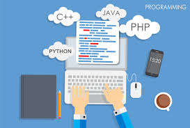

| Submodulo1 | Submodulo2 |
|---|---|
| Sistemas de Información | Programación |
| Emplea su creatividad en el uso de la metodología para el desarrollo del software, distinguiendo los elementos que la integran para favorecer un trabajo metódico y organizado en sus diferentes contextos. | Plantea el uso de diagramas de flujo y algoritmos, analizando los elementos que los conforman, fomentando su desarrollo creativo, con la finalidad de solucionar problemas dentro de su contexto de manera lógica. |
|
 |